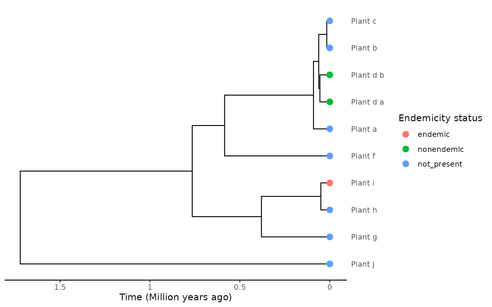
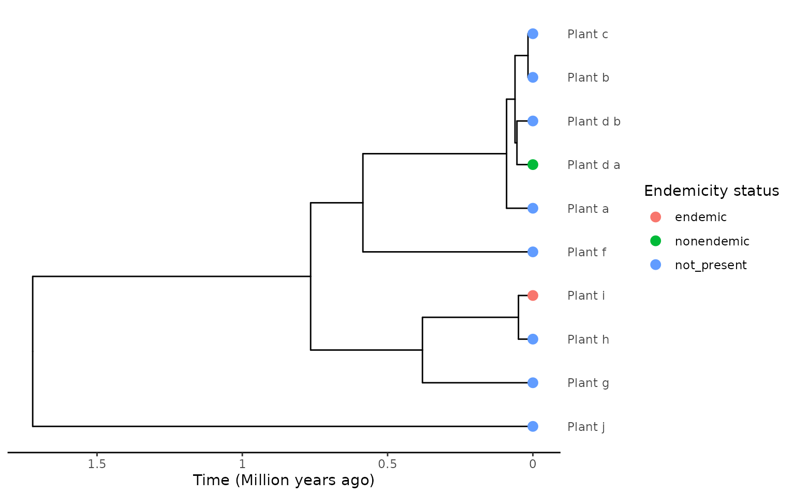
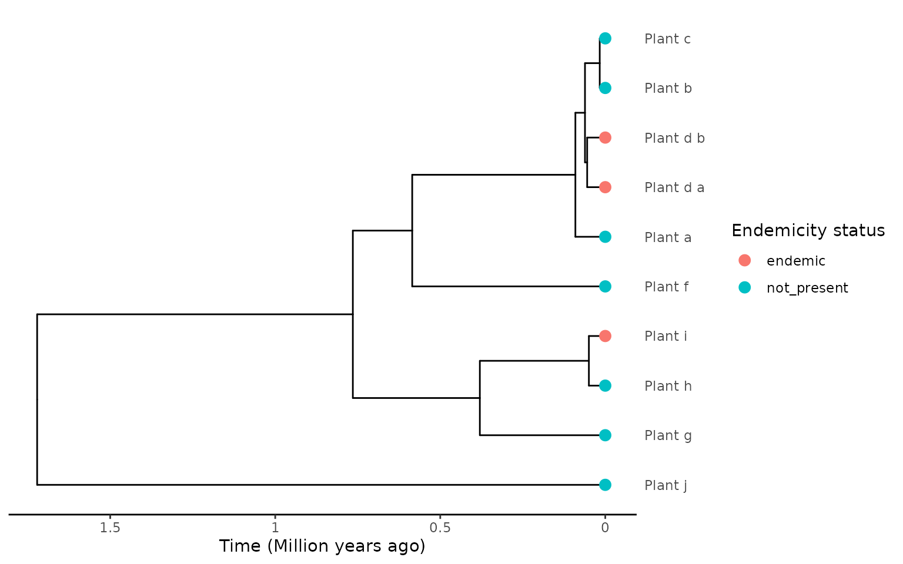
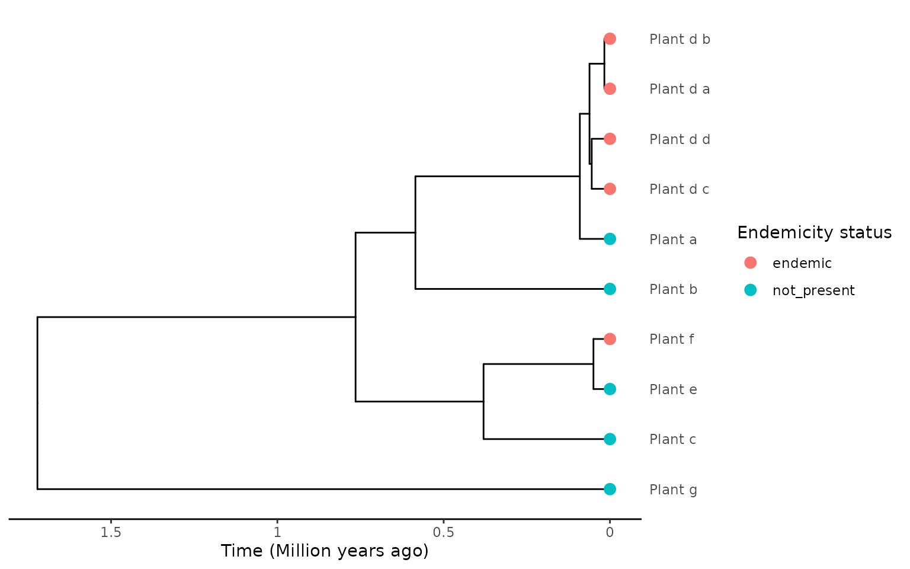
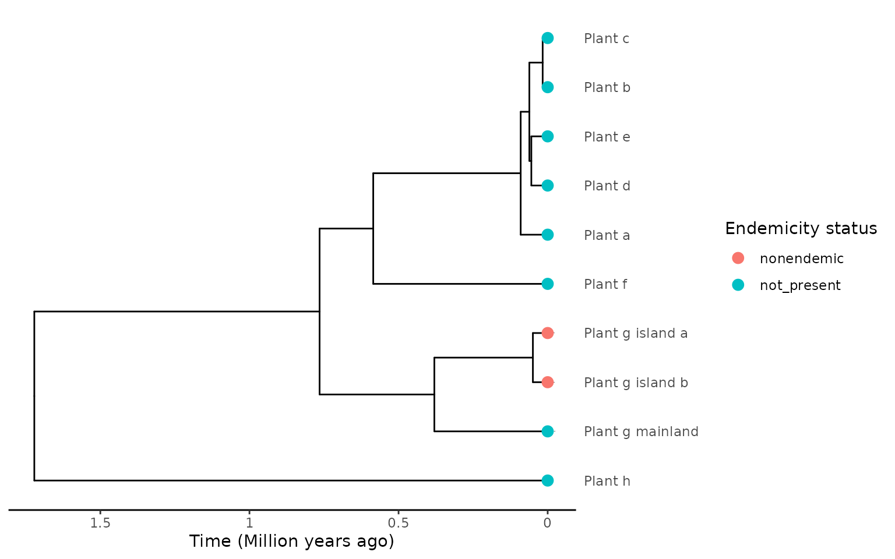

Extracting species with multiple tips in the phylogeny
Source:vignettes/Multi_tip_extraction.Rmd
Multi_tip_extraction.Rmd
library(DAISIEprep)
library(ape)
library(phylobase)
#>
#> Attaching package: 'phylobase'
#> The following object is masked from 'package:ape':
#>
#> edgesPhylogenetic trees are sampled to various completeness. In some cases the phylogeny includes all species of a given taxonomic group, in other words it has 100% species sampling. For other taxonomic groups the percentage sampling coverage is often lower. This is at the level of the taxonomic group, e.g. all Vipers (family Viperidae) assuming that all species have a single tip in the phylogeny. However, at the level of the species it is possible to have more than one sample per species and these can be used in phylogenetic inference to produce a phylogeny with multiple phylogenetic tips per species. These can optionally be collapsed into a single tip for each species, but for extracting phylogenetic island community data, e.g. using DAISIEprep, it can be beneficial to make use of the extra information of multiple tips per species, for example to infer a maxmimum and minimum colonisation time.
This vignette outlines at a high-level the different types of
phylogenetic information empiricists might possess and the different
endemicity status encodings used, and how extracting island community
data using extract_island_species() works in each.
Scenario: species-dependent endemicity encoding
set.seed(1)
tree <- ape::rcoal(10)
tree$tip.label <- paste("Plant", letters[1:10], sep = "_")
tree$tip.label[4] <- "Plant_d_a"
tree$tip.label[5] <- "Plant_d_b"
phylo <- phylobase::phylo4(tree)
endemicity_status <- c("not_present", "not_present", "not_present", "nonendemic",
"nonendemic", "not_present", "not_present",
"not_present", "endemic", "not_present")
phylod <- phylobase::phylo4d(phylo, as.data.frame(endemicity_status))
plot_phylod(phylod)
In this scenario we have a plant phylogeny with 9 species, and species “Plant_d” has two samples/tips in the tree. The samples are differentiated by the suffix labels: “_a” and “_b”.
Both “Plant_d” tips are labelled “nonendemic”, and this encoding is
independent of where the samples for each tip were collected
(species-dependent labelling), i.e. it is unknown if the
non-endemic species have been sampled once on the island and once on the
mainland, or twice on the island, or twice on the mainland. For the
species-dependent encoding we assume that all tips are on the island and
use the stem age of the species as the island colonisation time and the
within species divergence as the minimum colonisation time when using
the "min" extraction method.
There is one more island species in the phylogeny, “Plant_i”, which is endemic.
We can now extract the island community data using the
"min" algorithm:
island_tbl <- extract_island_species(phylod = phylod, extraction_method = "min")
island_tbl
#> Class: Island_tbl
#> clade_name status missing_species col_time col_max_age branching_times
#> 1 Plant_d nonendemic 0 0.06146596 TRUE NA
#> 2 Plant_i endemic 0 0.04960523 FALSE NA
#> min_age species clade_type
#> 1 0.05480904 Plant_d_.... 1
#> 2 NA Plant_i 1You can see that the extraction has successful extracted 2 island colonisations. The endemic “Plant_i” is extracted as per usual so we will not focus on that.
The “Plant_d” species has been correctly extracted as a single
non-endemic species with a colonisation time (col_time), a
minimum age of colonisation (min_age) which is taken from
the branching time between the two non-endemic tips on the island. The
logic here being that it is parsimonious to assume that the species
colonised the island once and diverged on the island, and therefore the
divergence would have been after the colonisation, providing a minimum
bound to the colonisation time. There are no branching times
(branching_times is NA) because there are no
species-level speciation events on the island, only divergence below the
level of the species.
Scenario: geography-dependent endemicity encoding
endemicity_status <- c("not_present", "not_present", "not_present",
"nonendemic", "not_present", "not_present",
"not_present", "not_present", "endemic", "not_present")
phylod <- phylobase::phylo4d(phylo, as.data.frame(endemicity_status))
plot_phylod(phylod)
In this scenario we use the same phylogenetic data, but use a
different labelling scheme. This time we use what we term
geography-dependent labelling. This is where the tips in the
phylogeny for multi-tip species are labelled according to where the
sample was collected. So a sample from a non-endemic species sampled on
the island would be labelled "nonendemic", but another
sample from the same species from the mainland will be labelled
"not_present".
The difference in the data with the first scenario is “Plant_d_b” is
sampled from the mainland so it is now encoded as not being present on
the island ("not_present").
island_tbl <- extract_island_species(phylod = phylod, extraction_method = "min")
island_tbl
#> Class: Island_tbl
#> clade_name status missing_species col_time col_max_age branching_times
#> 1 Plant_d_a nonendemic 0 0.05480904 FALSE NA
#> 2 Plant_i endemic 0 0.04960523 FALSE NA
#> min_age species clade_type
#> 1 NA Plant_d_a 1
#> 2 NA Plant_i 1We extract the island community data and see that again 2
colonisations are inferred, but this time there is not a
min_age extracted as there are no subspecies divergences on
the island.
Scenario: species-dependent endemicity encoding (endemics)
Revisiting the first scenario where we had multiple tips in the phylogeny from the same species, all labelled as non-endemic, independent of where the species sample came from, but this time the species is endemic to the island rather than non-endemic.
endemicity_status <- c("not_present", "not_present", "not_present", "endemic",
"endemic", "not_present", "not_present",
"not_present", "endemic", "not_present")
phylod <- phylobase::phylo4d(phylo, as.data.frame(endemicity_status))
plot_phylod(phylod)
island_tbl <- extract_island_species(phylod = phylod, extraction_method = "min")
island_tbl
#> Class: Island_tbl
#> clade_name status missing_species col_time col_max_age branching_times
#> 1 Plant_d endemic 0 0.06146596 TRUE NA
#> 2 Plant_i endemic 0 0.04960523 FALSE NA
#> min_age species clade_type
#> 1 0.05480904 Plant_d_.... 1
#> 2 NA Plant_i 1The same extraction procedure, using the "min"
algorithm, produces two endemic colonists. The multi-tip species is
extracted with a colonisation time taken as the stem age of the species
and minimum time of colonisation is taken from the within-species
divergence (branching) time.
The extraction also works if you have more samples/tips per species. Here we increase the number of tips in the “Plant_d” species to 4.
phylobase::tipLabels(phylo) <- c("Plant_a", "Plant_d_a", "Plant_d_b",
"Plant_d_c", "Plant_d_d", "Plant_b", "Plant_c",
"Plant_e", "Plant_f", "Plant_g")
endemicity_status <- c("not_present", "endemic", "endemic", "endemic",
"endemic", "not_present", "not_present",
"not_present", "endemic", "not_present")
phylod <- phylobase::phylo4d(phylo, as.data.frame(endemicity_status))
plot_phylod(phylod)
island_tbl <- extract_island_species(phylod = phylod, extraction_method = "min")
island_tbl
#> Class: Island_tbl
#> clade_name status missing_species col_time col_max_age branching_times
#> 1 Plant_d endemic 0 0.09053720 TRUE NA
#> 2 Plant_f endemic 0 0.04960523 FALSE NA
#> min_age species clade_type
#> 1 0.06146596 Plant_d_.... 1
#> 2 NA Plant_f 1The minimum age of colonisation in this case is the crown age of the
4 samples of the same species, with all species samples stored in the
$species column.
Scenario: geography-dependent endemicity encoding (multiple island samples)
Lastly, we look once again at the endemicity encoding where island samples are labelled as endemic or non-endemic, and mainland samples are labelled not on the island (even if a non-endemic island species, geography-dependent labelling). This time with multiple samples from the island that are monophyletic.
In this scenario we look at a simple case of a single island species (“Plant_g”) in the tree, with 3 samples, 2 on the island (“Plant_g_island_a” and “Plant_g_island_b”) and 1 on the mainland (“Plant_g_mainland”).
phylobase::tipLabels(phylo) <- c("Plant_a", "Plant_b", "Plant_c", "Plant_d",
"Plant_e", "Plant_f", "Plant_g_mainland",
"Plant_g_island_b", "Plant_g_island_a",
"Plant_h")
endemicity_status <- c("not_present", "not_present", "not_present",
"not_present", "not_present", "not_present",
"not_present", "nonendemic", "nonendemic",
"not_present")
phylod <- phylobase::phylo4d(phylo, as.data.frame(endemicity_status))
plot_phylod(phylod)
island_tbl <- extract_island_species(phylod = phylod, extraction_method = "min")
island_tbl
#> Class: Island_tbl
#> clade_name status missing_species col_time col_max_age branching_times
#> 1 Plant_g nonendemic 0 0.3800341 TRUE NA
#> min_age species clade_type
#> 1 0.04960523 Plant_g_.... 1The extracted island colonist has a colonisation time as the stem age of the island samples and the minimum colonisation time as the divergence of the island samples.